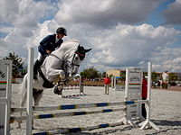
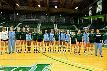

| Meaning and Usage | History |
Sport includes all forms of competitive physical activity or games which, through casual or organised participation, at least in part aim to use, maintain or improve physical ability and skills while providing enjoyment to participants, and in some cases, entertainment for spectators. Hundreds of sports exist, from those between single contestants, through to those with hundreds of simultaneous participants, either in teams or competing as individuals. In certain sports such as racing, many contestants may compete, simultaneously or consecutively, with one winner; in others, the contest (a match) is between two sides, each attempting to exceed the other. Some sports allow a "tie" or "draw", in which there is no single winner; others provide tie-breaking methods to ensure one winner and one loser. A number of contests may be arranged in a t ournament producing a champion. Many sports leagues make an annual champion by arranging games in a regular sports season, followed in some cases by playoffs.

Sport is generally recognised as system of activities which are based in physical athleticism or physical dexterity, with the largest major
competitions such as the Olympic Games admitting only sports meeting this definition, and other organisations such as the Council of Europe
using definitions precluding activities without a physical element from classification as sports. However, a number of competitive, but
non-physical, activities claim recognition as mind sports. The International Olympic Committee (through ARISF) recognises both chess and bridge
as bona fide sports, and SportAccord, the international sports federation association, recognises five non-physical sports: bridge, chess, draughts
(checkers), Go and xiangqi, and limits the number of mind games which can be admitted as sports.

Sport is usually governed by a set of rules or customs, which serve to ensure fair competition, and allow consistent adjudication of the winner. Winning can be determined by physical events such as scoring goals or crossing a line first. It can also be determined by judges who are scoring elements of the sporting performance, including objective or subjective measures such as technical performance or artistic impression.